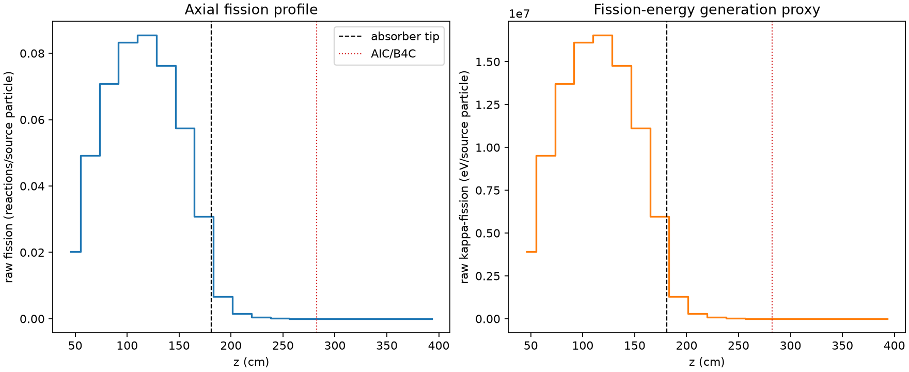
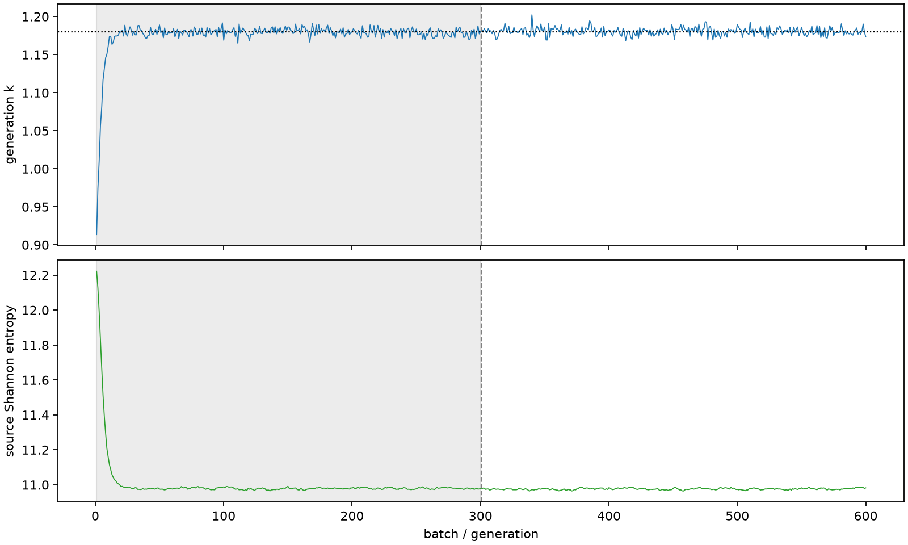

| field | value |
|---|---|
| experiment | V2-STAGE_256_OGRENCI_01-0017 |
| k | 1.1802845720486994 |
| MC standard error | 0.0001927895515617237 |
| seconds | 998.2315847690043 |
| acceptance | not_assessed |
| convergence | review_required |
Completed is output integrity only; physical and statistical review required. Zero tallies do not prove zero production or zero uncertainty.
| diagnostic | value |
|---|---|
| geometric fuel voxels | 5280 |
| zero fission tally voxels | 1220 |
| low signal fuel voxels | 2120 |
| low signal fission share | 6.40783235382104e-05 |
| low signal kappa share | 6.409777189124417e-05 |
| important fission share | 0.9500100314605533 |
| previous filter included | 3160 |
| duration estimate s | 1562.5173488400023 |
| actual minus estimate s | -564.2857640709981 |
| fission relative MC error | statistics |
|---|---|
| all_geometric_fuel | {"voxels": 5280, "positive_mean_voxels": 4060, "zero_mean_voxels": 1220, "undefined_relative_error_voxels": 1220, "median": 0.011968193692318892, "p95": 0.948475346783555, "maximum": 1.0000000000000002} |
| low_signal | {"voxels": 2120, "positive_mean_voxels": 900, "zero_mean_voxels": 1220, "undefined_relative_error_voxels": 1220, "median": 0.5927466597156776, "p95": 1.0, "maximum": 1.0000000000000002} |
| important_95pct | {"voxels": 1909, "positive_mean_voxels": 1909, "zero_mean_voxels": 0, "undefined_relative_error_voxels": 0, "median": 0.006471327823744022, "p95": 0.01007142425021833, "maximum": 0.012673848129961845} |
| outside_previous_filter | {"voxels": 2120, "positive_mean_voxels": 900, "zero_mean_voxels": 1220, "undefined_relative_error_voxels": 1220, "median": 0.5927466597156776, "p95": 1.0, "maximum": 1.0000000000000002} |
| kappa_fission relative MC error | statistics |
|---|---|
| all_geometric_fuel | {"voxels": 5280, "positive_mean_voxels": 4060, "zero_mean_voxels": 1220, "undefined_relative_error_voxels": 1220, "median": 0.011954296521218023, "p95": 0.9484722877993975, "maximum": 1.0000000000000002} |
| low_signal | {"voxels": 2120, "positive_mean_voxels": 900, "zero_mean_voxels": 1220, "undefined_relative_error_voxels": 1220, "median": 0.5920408974161954, "p95": 1.0, "maximum": 1.0000000000000002} |
| important_95pct | {"voxels": 1909, "positive_mean_voxels": 1909, "zero_mean_voxels": 0, "undefined_relative_error_voxels": 0, "median": 0.006463754176078842, "p95": 0.010059430859158709, "maximum": 0.012660181432256822} |
| outside_previous_filter | {"voxels": 2120, "positive_mean_voxels": 900, "zero_mean_voxels": 1220, "undefined_relative_error_voxels": 1220, "median": 0.5920408974161954, "p95": 1.0, "maximum": 1.0000000000000002} |
| axial bin | fission share | kappa-fission share |
|---|---|---|
| 1 | 0.04184595146286084 | 0.041847453435589245 |
| 2 | 0.1019631812128987 | 0.10196201345847078 |
| 3 | 0.14686405320093868 | 0.1468628438723824 |
| 4 | 0.17282456534896434 | 0.17282291965619065 |
| 5 | 0.17718149699074265 | 0.17717953665193562 |
| 6 | 0.15821790395622376 | 0.15821646073034265 |
| 7 | 0.11913278458903413 | 0.1191316296754976 |
| 8 | 0.06379728491988046 | 0.06379812387352825 |
| 9 | 0.013863140179768514 | 0.013867789066330143 |
| 10 | 0.003272280625197555 | 0.0032734756128258795 |
| 11 | 0.0007844520108876809 | 0.0007847562868067934 |
| 12 | 0.00019441223356067095 | 0.00019448630070605677 |
| 13 | 4.7087589290220365e-05 | 4.710180208548747e-05 |
| 14 | 9.66453893137206e-06 | 9.667393756339735e-06 |
| 15 | 1.4288738230890331e-06 | 1.4297201660757363e-06 |
| 16 | 1.5262851614101442e-07 | 1.5270370666679845e-07 |
| 17 | 1.5651231682079015e-07 | 1.5663554095791803e-07 |
| 18 | 1.394931003287749e-09 | 1.3949836891469871e-09 |
| 19 | 1.7312333101388051e-09 | 1.7291545493821107e-09 |
| 20 | 0.0 | 0.0 |
Histories include the inactive-to-active transition at batch 300. kappa-fission approximates fission energy production, not total heat deposition.

